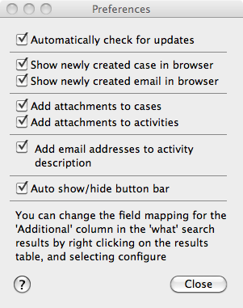

The Preferences Window
When you select Preferences from the Maildrop menu, you'll be presented with the Preferences Window.

The 5 options are
- "Automatically check for updates", when this is checked, Maildrop will automatically check to see if there's a newer version and offer to download and install it for you. It checks this each time Maildrop starts (but no more than once a day).
- "Show newly created case in browser", if checked, when you click "Add Case" the browser will open to show you the newly created Case record.
- "Show newly created email in browser", if checked, when you click "Add Email" the browser will open to show you the newly created Email Task record.
- "Add attachments to cases", if checked any attachments on the email will be uploaded to Salesforce.com and attached to the case.
- "Add attachments to activities", if checked, the attachment list in the Add Email window will default to upload all attachments, if unchecked, the attachment list will default to not upload (in either case, you can select/unselect the attachments on an email by email basis)
- "Add email addresses to activity description", if checked the from/to addresses for the email will be added to the activity comments.
All of these options default to being checked.
If you want to configure which extra field appears in the 'What' search results, then you can do this by right clicking on the search results table and picking configure columns. You can't do it from the preferences dialog because you need to be logged in.